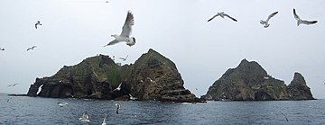

독도는 동해의 해저 지형 중 울릉분지의 북쪽에 위치한 화산섬으로, 평균 수심 2,000m의 해양 평원 위에 솟아 있습니다. 이 섬은 동도와 서도라고 불리는 두 개의 큰 섬을 중심으로 형성되어 있으며, 주변에는 총 91개의 작은 섬과 암초가 있습니다. 동도와 서도의 거리는 151m로, 서도의 면적은 88,740m²이며 최고 높이는 168.5m, 동도는 73,297m²이며 최고 높이는 98.6m입니다.
이 섬은 약 460~250만 년 전에 형성된 화산체로, 다양한 화산암층으로 이루어져 있습니다. 불안정한 지반으로 알려져 있으며, 지질학적으로는 울릉도와 유사한 화학조성을 가진 화산암으로 구성되어 있습니다. 또한, 독도는 대한민국의 행정구역으로 지정되어 있으며, 천연기념물로 보호되고 있습니다. 동도와 서도는 각각 다양한 지형과 명소를 갖고 있으며, 서도에는 대한봉과 탕건봉 등이 있고, 동도에는 한반도 바위와 숫돌바위 등이 있습니다.
